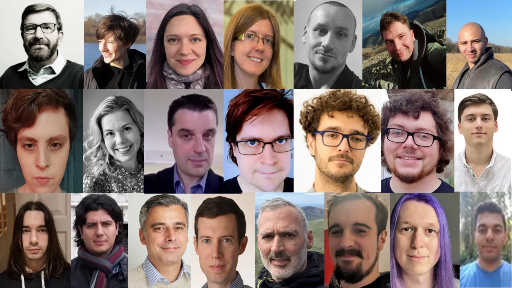
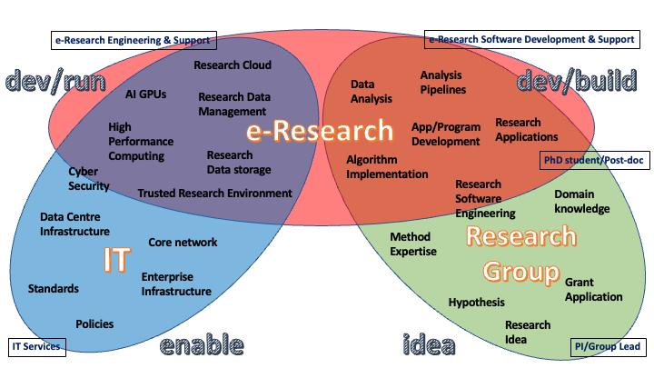
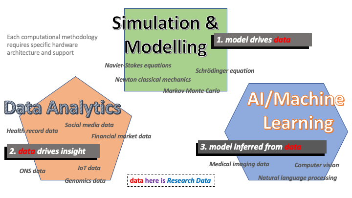
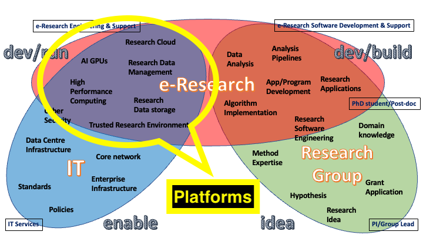
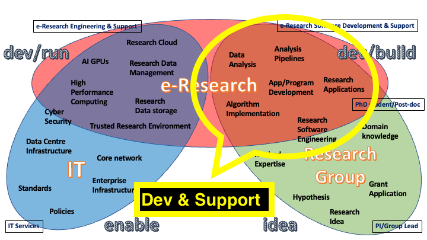
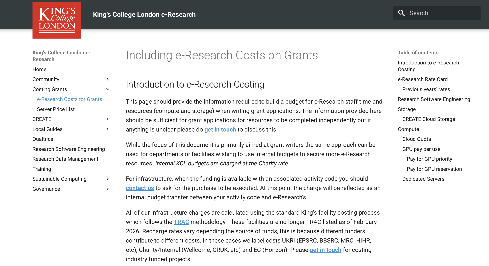

† (This isn't quite encompassing-enough)



Computational Research, Engineering and Technology Environment (CREATE)
CREATE includes a traditional HPC environment
sshslurmWeb-interface for accessing CREATE platform
Deep Learning workflows are supported on CREATE through:
PyTorch, TensorFlow, etc.CREATE platform for S/LLM research:
Not Chat-GPT/Claude, but has advantages for some areas of research:
A Trusted Research Environment (TRE) is a highly secure digital platform that allows approved researchers to access and analyse sensitive data without the data ever leaving the secure environment.
TREs are becoming increasingly popular in research due to:

The Research Software Engineering team can develop the software required to enable and facilitate your research.
The team have a wide range of experience and skills developing code for a range of academic disciplines.
Support is provided by:
The e-Research team can assist with project design and co-writing (for projects with computational-, data-science or sensitive data components)
We act as Co-Investigators where required.
We have a comprehensive Costing Model for inclusion of costs in grants.
Example courses being offered in recent months:
https://docs.er.kcl.ac.uk/training/
More information on courses is available on KCL SkillsForge.
The past three years, we've recruited an undergrad from Informatics to work in the team as part of their industrial placement year:

e-Research sits in the Research Management and Innovation Directorate (RMID) in Professional Services (PS).
We have a staff budget, and an annual capital budget for minor maintenance/hardware upgrades (from the Research Infrastructure Fund).
All software/licenses/warranties are paid through income from research grants
Research Computing facilities & support are an essential and integral component of a research university.
For this reason, and to support student development skills and basic/PoC usage, e-Research facilities and support have free-to-use components:
Costing model based upon TRAC methodology; some components are TRAC-listed, and others aren't
More information at: https://docs.er.kcl.ac.uk/costing_grants/
There was formerly the e-Research Governance Board to ensure that we deliver a relevant, quality service to the research community.
A new model currently being developed:
Chair of the Digital Research Infrastructure Subcommittee is David Moxey from Engineering. Membership to be identified.
Help and support is provided in three tiers:
(we also have a periodic Newsletter)